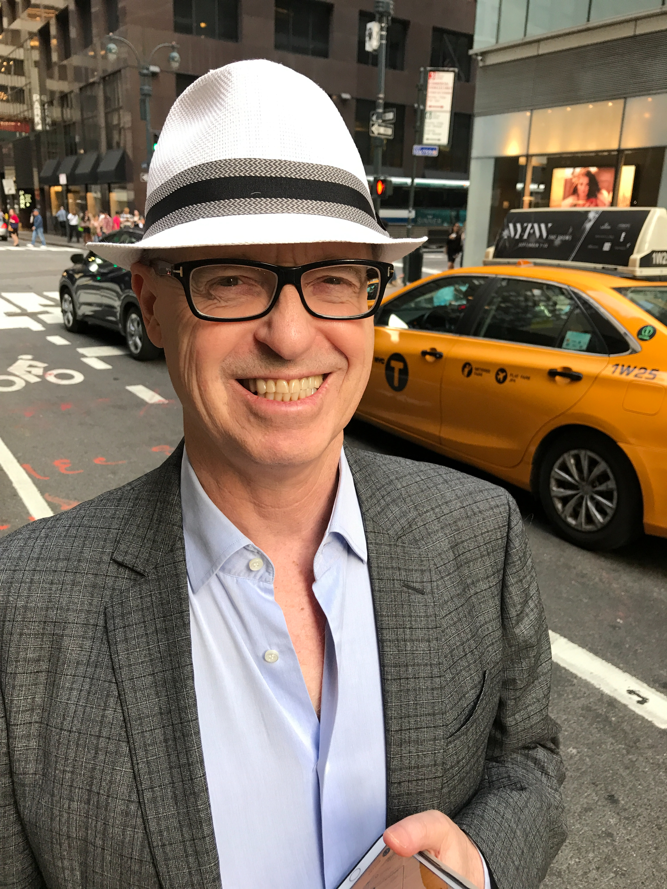
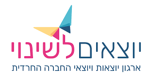
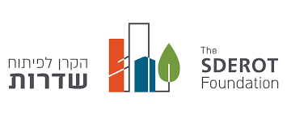
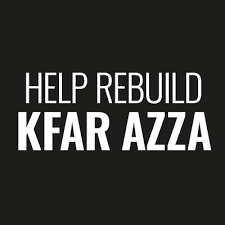
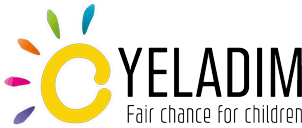
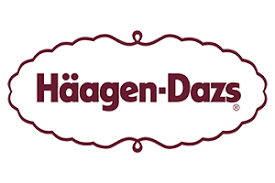
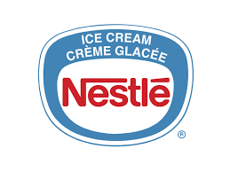

Dr. Smile מאמינה שרגעים קטנים של שמחה אמיתית יכולים לשנות את העולם — גלידה אחת בכל פעם.
אנחנו חיים בתוך עולם עמוס ומהיר. לפעמים, בתוך כל הרעש, קורה משהו פשוט: מישהו מקבל גלידה.
ולרגע אחד, הכל עוצר. הגוף נח. משהו מתרכך.
החיוך עולה, ואנחנו חוזרים להיות שוב ילדים.
"זה לא על הגלידה.
זה על הרגע הקצר שבו
הצרות לרגע נשכחות
ואנחנו חוזרים להיות ילדים."
אנחנו עובדים דרך השטח, דרך ארגונים ותשתיות קיימות, כדי להיות יעילים ובעיקר מדויקים ומתוזמנים לזמנים ולשפה שהכי מתאימה ונכונה.
מחלקים גלידות, בצורה אישית וממוקדת, מאפשרים לעצור לרגע. לחייך, לנשום ולהנות.
אנחנו עובדים בעיקר עם אוכלוסיות שנמצאות בתקופת משבר או אתגר. שכל חיוך שלהם הוא לא מובן מאליו.

ג'וש נולד בטורונטו, קנדה, להורים ניצולי שואה שהביאו איתם לעולם החדש לא רק חיים, אלא גם שקט עמוק שנוצר מתוך מה שעברו. הוא גדל כילד רגיש וסקרן בתוך קהילה שמרנית ונוקשה, שלא ידעה תמיד להכיל או להבין את עולמו הפנימי.
כשהתבגר, יצא למסע אישי וסלל את דרכו בכוחות עצמו, ללא רשת ביטחון. מונע מאמת פנימית שלא הסכים להתפשר עליה, פסע קדימה, התמודד עם אתגרים, ולמד מתוך חוויה ישירה. הוא נדד בין ארצות ותרבויות, למד והתפתח אצל מורים מרכזיים בתורות המזרח, הרבה לפני שהדבר הפך למיינסטרים.
מתוך הידע והניסיון שצבר, הגיע לארצות הברית והחל ללמד. מקבוצה קטנה של תלמידים מסורים שהתקבצו סביבו, הלך המעגל והתרחב, עד שהקים את Institute for Integrative Nutrition, שהפך לבית הספר הגדול בעולם לתזונה הוליסטית, עם למעלה מ־100,000 בוגרים ב־123 מדינות.
מעבר לעשייה המקצועית, ג'וש משמש כמנטור לאנשים רבים ברחבי העולם, ומלווה תהליכים אישיים מתוך הקשבה, עומק ואמונה ביכולת של כל אדם למצוא את דרכו, וליצור סביבו מעגלים של צמיחה ונתינה.
לצד כל אלה, הוא מעורב לאורך השנים ביוזמות פילנתרופיות מגוונות, שכולן נובעות מאותה תפיסה שמלווה אותו לאורך חייו: שכל אדם, ללא קשר לנסיבות חייו, ראוי לכבוד, לתמיכה ולרגעים אמיתיים של אושר.
"זו דרך פשוטה ואנושית, ליצור הקלה, חיבור ושמחה,
גם בתוך מציאות מורכבת"
השותפים שלנו






אם אתם מרגישים שזה יכול להיות משמעותי גם אצלכם
או בקהילה שלכם
נשמח להיות בקשר